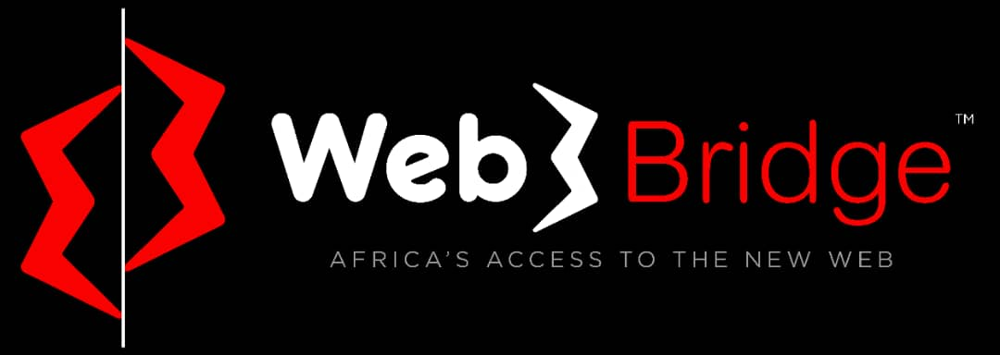

BLOCKCHAIN UNN
About Blockchain UNN
Founded by three undergraduate students of University of Nigeria. Blockchain UNN is a community of digital enthusiasts with a drive to educate impact and develop members of the University Community with basic and advanced advanced and advanced knowledge of cryptocurrency and blockchain, as well as its technology and development in UNN/UNEC Campuses.
Community Logo

To represent the lion UNN holds in high esteem as well as the Blockchain Concept. The Logo was scripted from scratch to combine both the lion and the Blockchain nodes
Community mission and vision
Our mission is to educate and develop Community members (including Students and lecturers) of the University of Nigeria, Nsukka with basic knowledge of Cryptocurrency on Blockchain Education and development.
Our Vision is to be the best Blockchain Campus Community in Africa.
Our impact so far...
Our past events To kick officially, we organized our first online webinar. Over 32 students were present (not bad for a start right?) This has helped to further the spread of Blockchain eduaction. It might interest you to know that we have an online community where we seek to train a lot of people(students). With this, we are reaching out to more people; outside the UNN (University Of Nigeria) community.
Founders


Partnership
We have partnered with Web3bridge to give Web3 and Blockchain developmeny related knowledge to our community.
We are always on the lookout for partners focused on bringing Blockchain adoption to Africa that would be of great aid to us in acieving our goals